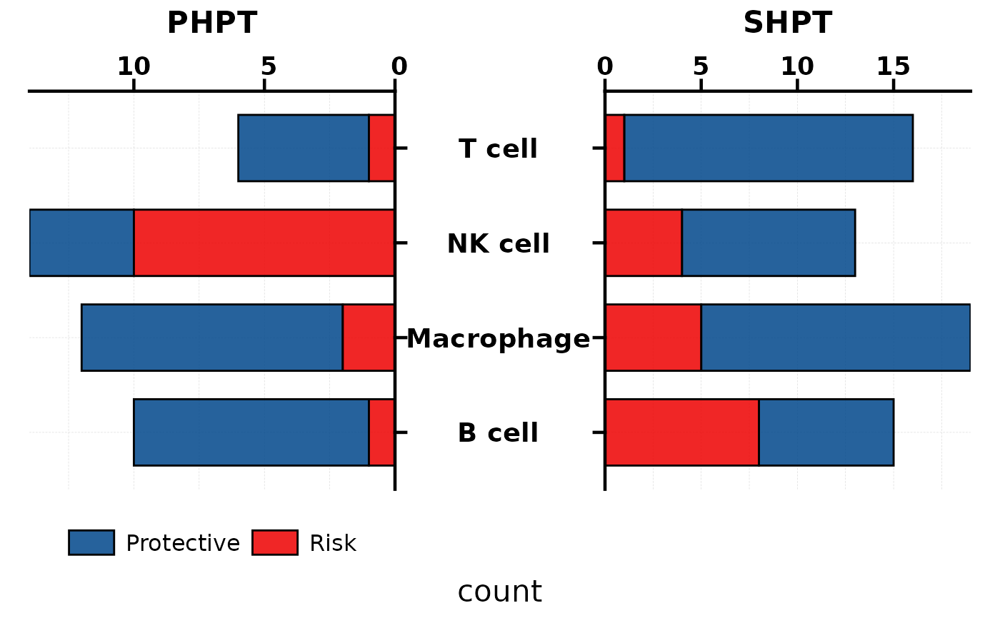
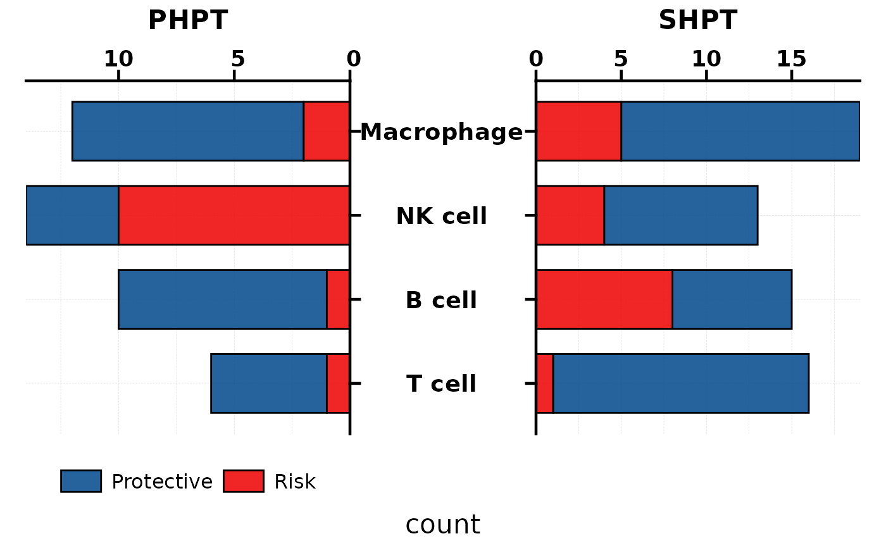
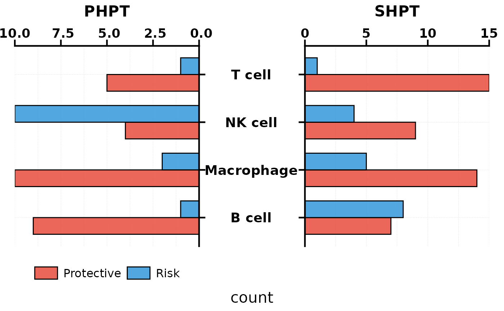
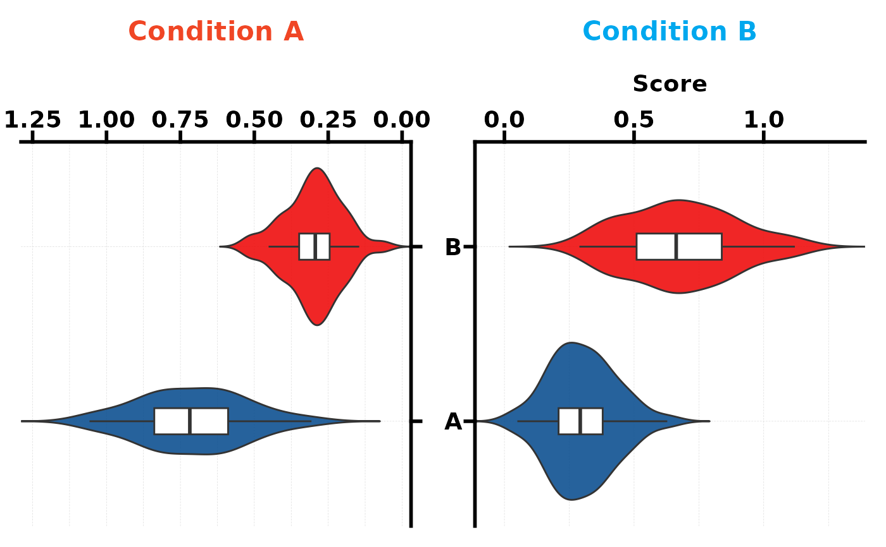
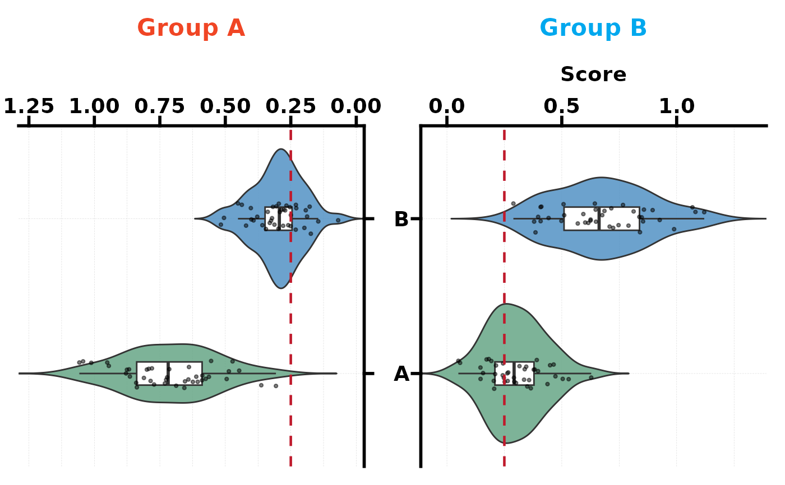

Create a butterfly chart (also known as a tornado or back-to-back chart) with three modes:
"bar": stacked horizontal bar chart (e.g. Risk vs Protective counts across two groups)."bar_dodge": side-by-side (dodged) horizontal bar chart. Eachfill.bylevel is drawn as a separate bar instead of stacked."violin": mirrored violin plots comparing continuous distributions between two conditions.
Usage
PlotButterfly(
data = NULL,
type = c("bar", "bar_dodge", "violin"),
stat.by = NULL,
fill.by = NULL,
value.by = NULL,
group.by = NULL,
data.left = NULL,
data.right = NULL,
left.title = NULL,
right.title = NULL,
levels = NULL,
palette = NULL,
alpha = 0.85,
alpha.by = NULL,
alpha.range = c(0.3, 1),
minmax = FALSE,
bar.width = 0.7,
bar.border = "black",
add_box = TRUE,
box.width = 0.15,
add_point = FALSE,
pt.size = 0.8,
pt.alpha = 0.5,
ref.line = NULL,
ref.color = "#bf1a2c",
text.colors = NULL,
left.title.color = "#f04625",
right.title.color = "#00a8ee",
title = NULL,
xlab = NULL,
base_size = 14,
legend.position = "bottom",
legend_theme = NULL,
width = 12,
height = 8,
filename = NULL
)Arguments
- data
Data frame in long format (bar mode). Must contain columns specified by
stat.by,fill.by,value.by, andgroup.by.- type
Chart type:
"bar"(default, stacked),"bar_dodge"(side-by-side), or"violin".- stat.by
Character. Column name for the y-axis category labels (bar mode). Default
NULL.- fill.by
Character. Column name for the stacked fill variable (bar mode, e.g. "Risk" / "Protective"). Default
NULL.- value.by
Character. Column name for the numeric value (bar mode). Default
NULL.- group.by
Character. Column name that defines the left vs right panels (bar mode; must have exactly 2 levels). Default
NULL.- data.left
Data frame in wide format (violin mode). Each column is a variable, each row is an observation.
- data.right
Data frame in wide format (violin mode). Same structure as
data.left.- left.title
Character. Title for the left panel. Default
NULL(auto-detected fromgroup.bylevels or"Left").- right.title
Character. Title for the right panel. Default
NULL(auto-detected fromgroup.bylevels or"Right").- levels
Display order for y-axis categories. One of:
NULL(default): original data order."up": sort by mean value ascending (smallest at bottom)."down": sort by mean value descending (largest at bottom).A character vector: explicit custom order.
- palette
Colour palette. One of:
NULL(default): usespal_lancet.A single string matching a name in
palette_list: usespal_get().A character vector of colours: used directly.
In bar mode, colours map to
fill.bylevels. In violin mode, colours map to each variable.- alpha
Numeric 0–1. Fill transparency. Default 0.85.
- alpha.by
Character. Column name for mapping bar fill transparency (bar mode only). When provided, the alpha of each bar is scaled by this column's values (e.g. cell type percentage), producing darker bars for higher values. Overrides the fixed
alpha. DefaultNULL(uniform alpha).- alpha.range
Numeric vector of length 2. The output alpha range for
alpha.bymapping. Defaultc(0.3, 1).- minmax
Logical. If
TRUE, apply min-max scaling (0–1) to thevalue.bycolumn within each combination ofgroup.byandfill.by(bar mode only). Useful when comparing methods that produce values on different scales. DefaultFALSE.- bar.width
Numeric. Bar width (bar mode). Default 0.7.
- bar.border
Character. Bar border colour. Default
"black".- add_box
Logical. Overlay boxplot on violins (violin mode)? Default
TRUE.- box.width
Numeric. Box overlay width. Default 0.15.
- add_point
Logical. Overlay jittered points on violins? Default
FALSE.- pt.size
Numeric. Jitter point size. Default 0.8.
- pt.alpha
Numeric. Jitter point transparency. Default 0.5.
- ref.line
Numeric. Reference line x-position (violin mode). Default
NULL(none).- ref.color
Character. Reference line colour. Default
"#bf1a2c".- text.colors
Character vector. Per-variable y-axis label colours (violin mode). Default
NULL(all black).- left.title.color
Character. Left panel title colour. Default
"#f04625".- right.title.color
Character. Right panel title colour. Default
"#00a8ee".- title
Character. Overall plot title. Default
NULL.- xlab
Character. X-axis label. Default
NULL(auto).- base_size
Numeric. Base font size. Default 14.
- legend.position
Legend position. Accepts standard ggplot2 values (
"bottom","right","none") or a numeric vectorc(x, y)for inside-plot placement. Default"bottom".- legend_theme
A ggplot2 theme object for styling the legend box, e.g.
theme_legend1(). When provided, legend formatting is applied viafmt_legend. DefaultNULL.- width
Numeric. Output width in inches when saving. Default 12.
- height
Numeric. Output height in inches when saving. Default 8.
- filename
Character. File path to save the plot. Default
NULL(no saving).
See also
Other plot:
PlotButterfly2(),
PlotRankCor(),
plt_cat(),
plt_cohen(),
plt_con(),
plt_dist(),
plt_radar(),
plt_sankey(),
plt_upset()
Examples
# --- Bar mode (stacked) ---
set.seed(42)
bar_df <- data.frame(
celltype = rep(c("T cell", "B cell", "NK cell", "Macrophage"),
each = 2, times = 2),
response = rep(c("Risk", "Protective"), times = 8),
count = sample(1:15, 16, replace = TRUE),
group = rep(c("PHPT", "SHPT"), each = 8)
)
PlotButterfly(bar_df, stat.by = "celltype", fill.by = "response",
value.by = "count", group.by = "group")

# --- Bar mode sorted by mean value (ascending) ---
PlotButterfly(bar_df, stat.by = "celltype", fill.by = "response",
value.by = "count", group.by = "group", levels = "up")

# --- Bar dodge mode (side-by-side) ---
PlotButterfly(bar_df, type = "bar_dodge", stat.by = "celltype",
fill.by = "response", value.by = "count",
group.by = "group",
palette = c("#E74C3C", "#3498DB"))

# --- Violin mode ---
set.seed(123)
dl <- data.frame(A = rnorm(40, 0.7, 0.2), B = rnorm(40, 0.3, 0.1))
dr <- data.frame(A = rnorm(40, 0.3, 0.15), B = rnorm(40, 0.7, 0.2))
PlotButterfly(type = "violin", data.left = dl, data.right = dr,
left.title = "Condition A", right.title = "Condition B")
#> Warning: Vectorized input to `element_text()` is not officially supported.
#> ℹ Results may be unexpected or may change in future versions of ggplot2.

# Violin with reference line and custom colours
PlotButterfly(type = "violin", data.left = dl, data.right = dr,
left.title = "Group A", right.title = "Group B",
palette = c("#66a686", "#5292c4"),
ref.line = 0.25, add_point = TRUE)
#> Warning: Vectorized input to `element_text()` is not officially supported.
#> ℹ Results may be unexpected or may change in future versions of ggplot2.
